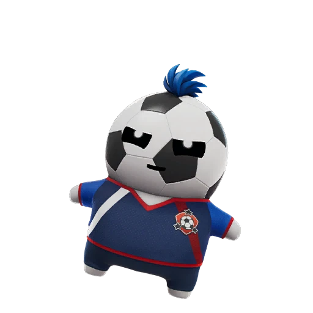

Fortnite Sprite · Epic
Striker Sprite: Fortnite Companion Guide, Variants, and Drop Rates
Triggers Overdrive after mantling or hurdling. Find it, extract it, and track every Striker variant on the FORTNITE SPRITES TRACKER.

- Rarity
- Epic
- Ability
- Triggers Overdrive after mantling or hurdling.
- Where to find
- Score a goal at the Soccer Pitch.
- Summon cost
- 2700 Sprite Dust
- Variants
- 5 released
- Added
- v41.10
| Variant | Drop rate | Bonus | Status |
|---|---|---|---|
| Striker | 6.98% | Standard ability | Released |
| Gold Striker | 0.31% | 3× elimination XP | Released |
| Gummy Striker | 0.23% | +20% Sprite Dust | Released |
| Galaxy Striker | 0.12% | +30% ammo | Released |
| Holofoil Striker | 0.0500000% | Squad rare-find chance | Released |
Track your Striker Sprite collection — mark every variant you own.
Open the FORTNITE SPRITES TRACKER →What the Striker Sprite Is and Its Rarity
The Striker Sprite is one of the Epic-tier companions introduced in the v41.10 update, and it has quickly become a favorite for movement-focused players. As an Epic Sprite, the Striker Sprite sits in the middle of the rarity ladder: rarer than Rare Sprites like Water or Fire, but more attainable than the Legendary and Mythic options. Its Normal version drops at roughly 6.98%, which makes the standard Striker Sprite a realistic goal for almost any match where you put in the effort to claim it.
How to Find and Extract the Striker Sprite
What sets the Striker Sprite apart is how you obtain it. You will not find this companion sitting in an ordinary chest. Instead, the Striker Sprite is awarded for scoring a goal at the Soccer Pitch on the map. That single, skill-based unlock condition gives this Sprite a fun, objective-driven flavor that most other companions lack, and it rewards players who take a detour from the usual loot run.
To extract the Striker Sprite, head to the Soccer Pitch point of interest, get the ball into the net, and the companion is yours to claim. There is no summon cost attached to it, so you do not need to spend resources to earn this Sprite. Once you have scored your goal and the companion is bound to you, you carry it for the rest of the match and bank it toward your collection. Because the unlock is tied to a specific location, contested early-game landings at the Soccer Pitch are common, so plan your drop and movement accordingly if the Striker Sprite is your target.
The Striker Sprite Ability: Is It Worth Using?
The Striker Sprite ability triggers Overdrive after you mantle or hurdle an obstacle. Overdrive is a strong burst of movement, and tying it to mantling and hurdling means the Striker Sprite rewards aggressive, mobile play. If you are the kind of player who is constantly vaulting fences, scaling walls, and chaining traversal, this companion is genuinely worth slotting in. The ability shines for rushers, repositioning duelists, and anyone who wants extra speed to close gaps or escape a losing fight. For slower, hold-the-zone players it may matter less, but as a momentum tool the Striker Sprite is one of the more satisfying Epic abilities to use.
Every Striker Sprite Variant and Its Drop Rate
Like every companion in the game, the Striker Sprite comes in several variants, and each one carries its own drop rate and bonus. The Normal Striker Sprite is the baseline at about 6.98% and provides the standard Overdrive ability with no extra bonus. The Gold variant is far scarcer at around 0.31% and grants 3x bonus Sprite XP from eliminations, making it the pick for players grinding progression. The Gummy finish drops near 0.23% and adds +20% Sprite Dust on extraction, ideal if you are farming crafting currency. The Galaxy version drops at roughly 0.12%, and it gives +30% more ammo on pickup, a quietly powerful perk in long matches. There is also a Holofoil Striker Sprite, live since July 9, 2026 at a 0.05% drop rate; it gives your squad a chance to find rare Sprites from containers. No Gem or Rift finish is listed for this companion, so the released chase now ends with Holofoil.
Tips and Strategy for Chasing the Striker Sprite
Chasing the Striker Sprite efficiently comes down to a few habits. First, prioritize the Soccer Pitch early when you specifically want this companion, since the goal is the only path to the unlock. Second, if you are hunting a rare finish like Gold, Gummy, or Galaxy, accept that the odds are low and treat every Striker Sprite goal as another roll at the variant table rather than a guaranteed prize. Third, pair it with a mobility-heavy playstyle so the Overdrive trigger fires often and you get full value from carrying it. Finally, keep a record of which finishes you have already pulled so you do not waste effort chasing duplicates. A good FORTNITE SPRITES TRACKER makes this simple by showing your progress at a glance and flagging the variants you still need. You can track your Striker Sprite collection on our FORTNITE SPRITES TRACKER and tick off each variant the moment you extract it, turning a long grind into a clear, motivating goal.
Frequently asked questions
How do you get the Striker Sprite in Fortnite?
Score a goal at the Soccer Pitch on the map and the Striker Sprite is awarded to you. There is no summon cost, so you only need to put the ball in the net to unlock this Epic companion.
What does the Striker Sprite ability do?
It triggers Overdrive whenever you mantle or hurdle an obstacle, giving you a burst of movement. The ability rewards mobile, aggressive play and is one of the more fun Epic abilities to use.
What is the rarest released variant?
The Holofoil is the rarest published finish at 0.05%, just below the Galaxy version at 0.12%, which grants +30% more ammo on pickup. The Holofoil finish went live on July 9, 2026, but its drop rate has not been published yet.